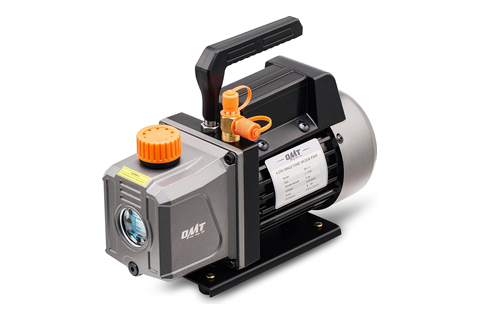
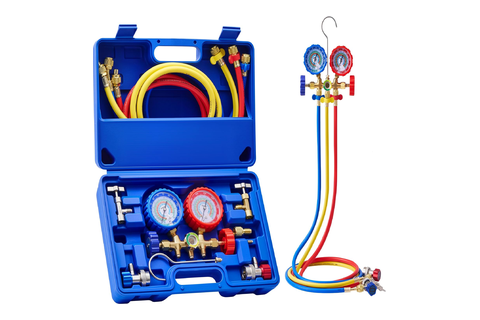
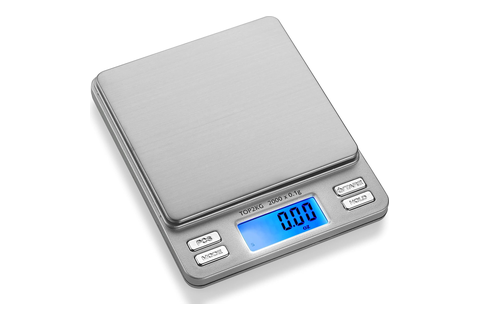
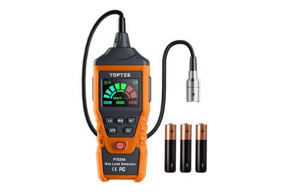
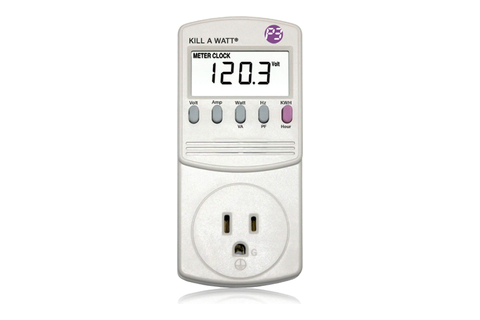

Vacuum + charge
Orion 4 CFM · vent, evacuate, charge and prove — all through the BPV31
Tool station · 07/13Kitchen edition
The loop has one opening. The BPV31
clamps onto the compressor process tube to vent the factory charge and
never comes off again — argon, vacuum, refrigerant and every later
service pass through that one 1/4″ SAE
flare. What changes across the whole station is the far end of the
hose.
Pump
4 CFM 1/3 HP single-stage
Ultimate
150 µ target 500
Scale
2000 g × 0.1 g
Charge
±1 g Δmass of the can
Operation
Instrument
Reads
What it is really for
VentRL-02
Manifold gauge at the BPV31
saddle clamp + valve core, pierced once
Atmospheric
no further hiss, no propane-like smell at the valve
The factory R-600a leaves before any flame arrives. The valve that
vents it is the port every later step uses.
VacuumRL-06
Orion 4 CFM · 1/3 HPsingle-stage, 150 µ ultimate
≤ 500 microns, held 15 minthen 15 min valved off — no rise
The brazes' first proof. A rise under isolation is moisture (pump
longer) or a leak (find it, and the joint gets recut).
ChargeRL-07
Smart Weigh Pro
2000 g × 0.1 g — under the tolerance it meters
Δmass to ±1 gfactory 15 g / 23 g plus +5-15 g, iterated 1–2 g
The can is the meter. R-600a flows into the vacuum on its own vapor
pressure — the grams the can loses are the grams the loop holds.
ProveRL-08
Toptes PT520A · Kill-A-Watt
detector at every joint, meter on the cord
~1 A running, zero hits
suction cold in a minute or two · 3 min minimum off-time
The last look at a joint from outside. Both tie-ins, the BPV31 saddle,
its flare cap, every threaded connection.
⚠
R-600a is
flammable — LFL ~1.8 % in air.
Vent outdoors or under a hood, no ignition source within
3 m.
⛔
A leak
found under charge is a full redo — vent, recut, argon,
rebraze, vacuum, recharge. Repair-in-place is not the path.
One pump, two benches. The pour-and-cure
chamber has no pump of its own and mates this same Orion over
1/4″ SAE — an evacuation and a
silicone degas compete for it.
Have in hand

Orion 4 CFM1/3 HP, 150 µ

Orion manifold1/4″ SAE gauges

Smart Weigh Pro2000 g × 0.1 g

Toptes PT520Ahydrocarbon sniffer

Kill-A-Wattrun-up draw
Clamped on at the vent, capped at the end of the
charge — between those two moments the loop's only opening is
a hose fitting; after them it is the service access for life.